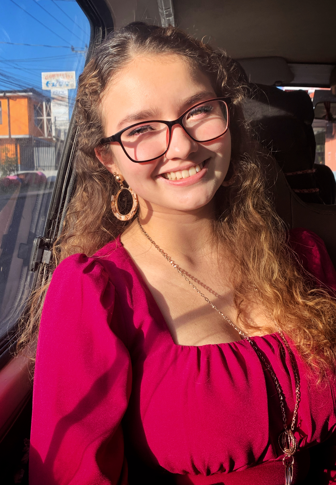

Biografía
Me gusta creer que la vida está llena de oportunidades, cada día es una oportunidad pero hay que ser velientes para tomarlas. Siempre he estado de alguna u otra manera
conectada con la tecnología y la informática, hasta que en el colegio llegué a estudiar informática en Redes de computadoras, un área que me llama mucho la atención
porque sé que nuestro mundo virtual se basa de conexiones y datos de todo tipo viajando por la red. También me apasiona el diseño gráfico y la manera en la que por
medio de una imagen, líneas, letras... podemos transmitir un mensaje y provocar una emoción en quien lo mira.
Actualmente trabajo dando soporte técnico y he disfrutado de resolver problemas de todo tipo en las computadoras de las demás personas y aprender de cada caso extraño
que se me presente, sé que poco a poco voy adquiriendo más conocimiento y experiencia dentro del área de la tecnología y así voy conviertiéndome en la profesional que
quiero llegar a ser. Adicionalmente a la informática, he aprendido de los principios del diseño y a manejar software para diseñar, editar e Ilustrar. A raíz de eso,
trabjo haciendo imágenes gráficas, diseños e ilustraciones como proyecto personal y en algún momento me gustaría llegar a profesionalizarme en dicha área.
En mi día a día me gusta tener una mentalidad de aprendizaje, sé que de cada cosa que haga puedo aprender algo, hay mucho que aprender de las demás personas. Dentro
de mis pasatiempos favoritos están el diseñar, dibujar; me encanta escribir como manera de expresar mis emociones. Adoro visitar a mi familia y pasar toda una tarde
con ellos y si el tiempo nos alcanza, cocinar u hornear nuestras recetas favoritas. Tambiéen disfruto mucho de hacer actividad física aunque a veces cuesta sacar
el tiempo para eso. Los idiomas es uno de los que podría considerar una de mis habilidades favoritas, desde pequeña estudio inglés y a partir de este año decidí
tomar otro reto, el de aprender a hablar portugués.
Vivo con mis dos padres y mis tres hermanos, aunque la casa nunca se encuentre callada, me gusta mucho sentir que siempre estoy acompañada. Ellos siempre han sido mi mayor apoyo y motivo para seguir adelante y no rendirme cuando una piedra se presenta en mi camino. En mi familia tenemos en común el amor por los animales y las plantas; tenemos una perrita, una perica y seis cuilos que son como nuestros hijos. Mi mamá y yo somos las que, en gran parte, nos dedicamos al cuidado de las plantas, he aprendido mucho al encargarme de ellas, nos hablan mucho con solo el color de sus hojas.